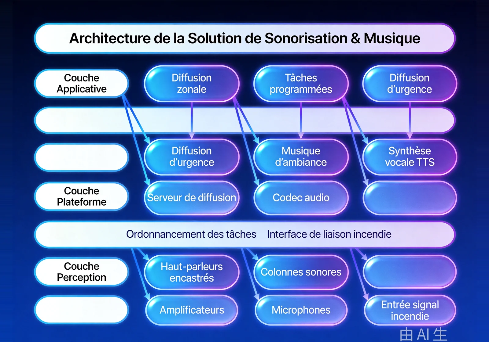

Pour les bâtiments publics tels que immeubles de bureaux, centres commerciaux, hôtels, écoles et hôpitaux, une solution de sonorisation et musique d'ambiance sur réseau IP qui répond aux points de douleur clés que sont le zonage peu précis, la forte dégradation audio et le découplage avec les systèmes incendie, couvrant diffusion quotidienne, musique d'ambiance et évacuation d'urgence incendie avec un seul système.
Vue d'ensemble
Fournit aux bâtiments publics une solution de sonorisation et musique d'ambiance haute qualité sur réseau IP, répondant aux problèmes de zonage faible, de dégradation audio et de découplage incendie de la sonorisation analogique traditionnelle, et réalisant une gestion intégrée diffusion quotidienne, musique d'ambiance et évacuation d'urgence.
Applicable à : Immeubles de bureaux, centres commerciaux, hôtels, écoles, hôpitaux, gares, aéroports et autres lieux publics.
- Basé sur le réseau IP, déploiement flexible et extension facile
- Transmission numérique au son clair, sans dégradation
- Contrôle fin de 256 zones indépendantes
- Liaison approfondie avec les systèmes incendie, basculement automatique en urgence
Bénéfices : Un seul système remplace plusieurs systèmes distincts et réduit les coûts de construction ; la gestion numérique améliore l'efficacité opérationnelle ; la liaison incendie protège la vie des personnes.
Défis Métier
Dans l'exploitation de tours de bureaux, de centres commerciaux, d'écoles et d'hôpitaux, les clients peinent souvent face à des installations de sonorisation fragmentées, à une dégradation de l'audio et à une liaison incendie manquante ; ils ont besoin d'une sonorisation sur réseau IP au zonage fin et à la liaison incendie approfondie.
Systèmes redondants en parallèle
Musique d'ambiance, appels professionnels et diffusion incendie tournent sur des systèmes séparés : équipements doublés et coûts élevés.
Audio analogique dégradé
La sonorisation analogique traditionnelle perd en qualité sur les longues distances, avec des niveaux déséquilibrés.
Zonage grossier
Pas de volume ni de contenu indépendants par étage ou par zone.
Risque en situation d'urgence
L'incendie impose une bascule manuelle vers la diffusion d'évacuation, ce qui retarde l'évacuation et crée un danger pour les personnes.
Une plateforme de sonorisation unique
Un seul système doit porter diffusion quotidienne, musique d'ambiance et évacuation d'urgence.
Liaison incendie approfondie
Les signaux incendie doivent déclencher automatiquement la bascule vers la diffusion d'évacuation, sans intervention humaine.
Scénarios typiques :
Rôles concernés : Responsables d'immeuble, agents de sécurité incendie, administrateurs de sonorisation.
Architecture
Conçue sur une architecture réseau IP en quatre couches « sources – transmission – diffusion – contrôle », la solution couvre la diffusion zonée, les tâches programmées et la diffusion d'urgence, avec une liaison approfondie aux systèmes d'alarme incendie et un pilotage à distance depuis PC et mobile.

La couche sources alimente programmes et signaux incendie ; l'audio circule numériquement sur le réseau IP vers les haut-parleurs zonés ; la couche contrôle gère programmation, planifications et habilitations ; en cas d'alarme, toute la chaîne bascule automatiquement vers la diffusion d'évacuation.
Modules clés
Gestion des sources réseau
Le serveur audio centralise toutes les sources de programmes, avec un pilotage de la diffusion à distance.
Contrôle fin sur 256 zones
Volume et contenu indépendants par étage ou par zone, sans interférence mutuelle.
Bascule sur liaison incendie
Les signaux incendie déclenchent automatiquement la diffusion d'évacuation en priorité absolue.
Programmation & diffusion en une touche
Sonneries et programmes horaires s'exécutent automatiquement ; les urgences se diffusent d'une seule touche.
Gestion à distance
Pilotage depuis PC et mobile, à tout moment et en tout lieu.
Capacités d'intégration :
- Liaison approfondie avec les systèmes d'alarme incendie : les signaux déclenchent la bascule automatique vers la diffusion d'évacuation
- Pilotage à distance depuis PC et mobile
- Tâches programmées et diffusion toutes zones en une touche
Avantages et livraison
Avec une plateforme de sonorisation sur IP et une liaison incendie éprouvée, nous aidons les bâtiments publics à remplacer plusieurs systèmes par un seul ; la livraison couvre relevés et conception, câblage et installation, mise en service et formation, puis une maintenance sous garantie.
Avantages différenciants
Un système, trois usages
Couvre musique de fond, appel professionnel et évacuation d'urgence dans un seul système, remplaçant plusieurs systèmes indépendants.
256 zones indépendantes
Chaque zone diffuse un contenu différent avec un contrôle par étage, adapté aux bâtiments complexes.
Liaison incendie automatique
Bascule automatiquement vers la diffusion d'évacuation en cas d'incendie, sans intervention manuelle.
Gestion mobile à distance
Contrôle à distance depuis PC et mobile ; les responsables maîtrisent l'état de la diffusion en tout lieu.
Transmission sur réseau IP
S'appuie sur le réseau IP existant : câblage simple, extension flexible, faible coût pour de nouvelles zones.
Qualité sonore haute fidélité
Traitement audio numérique : son clair sans dégradation, musique confortable et consignes précises.
Processus de mise en œuvre
Étude des besoins
Recenser les zones du bâtiment, les usages de diffusion et les exigences de liaison incendie.
Conception
Produire le plan de zonage, l'implantation des points et la liste des équipements.
Câblage réseau
Déployer les liaisons de transmission sur le réseau IP ou des lignes dédiées.
Installation des équipements
Installer les haut-parleurs, les sources audio et les équipements de contrôle.
Mise en service
Tests conjoints des zones, tâches planifiées et liaison incendie.
Formation et remise
Former les gestionnaires et les agents de sécurité incendie avant la remise.
Garantie de service
Valeur client
Un système remplace plusieurs systèmes indépendants, réduisant les coûts de construction et de maintenance ; la gestion numérique améliore l'efficacité opérationnelle ; la liaison incendie protège les vies.